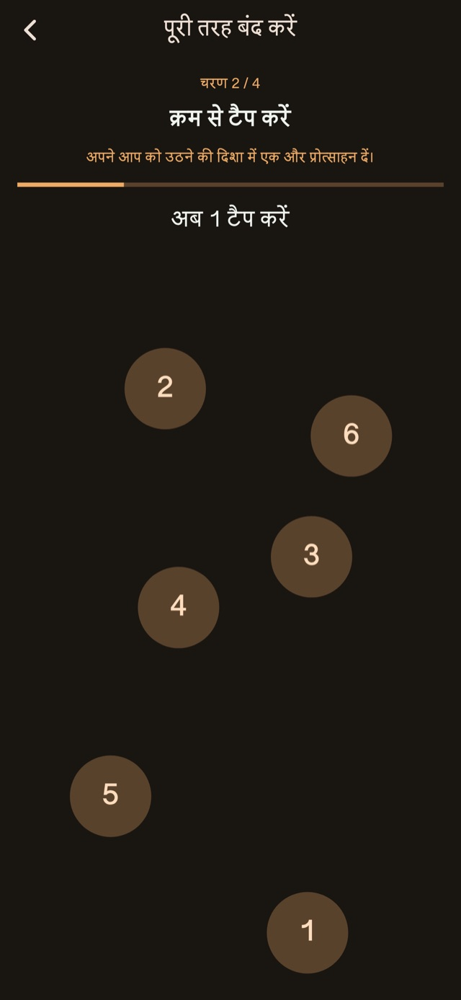
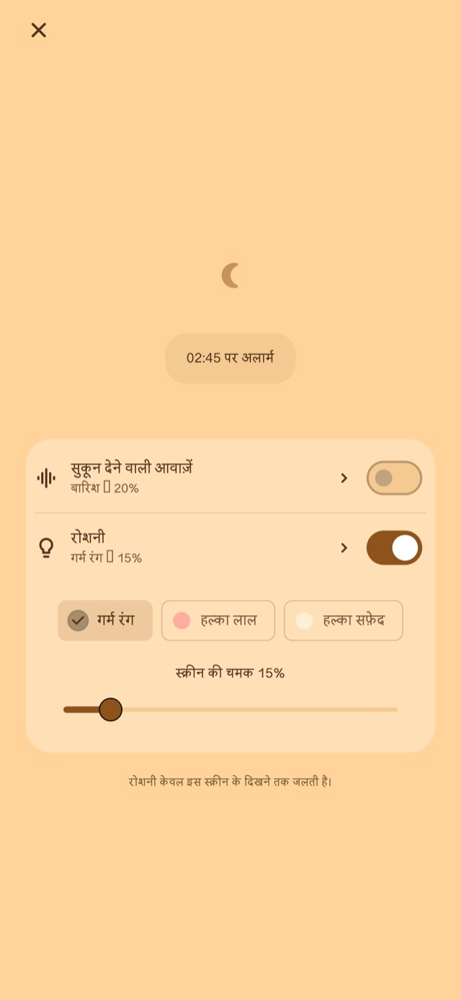

सुकून देने वाली आवाज़ें
बारिश, लहरों या व्हाइट नॉइज़ के साथ आराम करें। ध्वनि केवल आपके चालू करने पर बजती है और पहले अलार्म तक धीरे-धीरे बंद हो जाती है।
झपकी और बच्चे को सुलाने के बाद उठने के लिए कंपन अलार्म
उन लोगों के लिए जो झपकी लेते हुए या बच्चे को सुलाते हुए सोते रह जाते हैं।
01कंपन पैटर्न
बदलती अवधि और लय, रोज़ की सूचनाओं से अलग महसूस होती हैं। यह अनोखा एहसास अलार्म पर ध्यान देने और जागने में मदद करने के लिए है।
छोटे, लंबे और लगातार कंपन। चार मूल मोड चुनें: रैंडम, नोटिफिकेशन शैली, अधिक लंबे या अधिक छोटे कंपन। अवधि और अंतराल में बदलाव से लय बदलती है। अलार्म लगाने से पहले आज़मा सकते हैं।
कंपन पैटर्न
02कई सूचनाएँ
केवल मौजूदा सूचना रोककर अगली सूचनाएँ रख सकते हैं, या पूरा सेट समाप्त करके बाकी रद्द कर सकते हैं।
अलार्म की संख्या और अंतराल सेव करना प्रीमियम सुविधा है।
कई सूचनाएँ
उठने पर समाप्त करें
03रोकने के काम
गणित, संख्याओं को क्रम से छूना, दबाकर रखना और बार-बार टैप करना रोकने और स्नूज़ के चरणों में शामिल हैं। सामान्य चरण उपलब्ध हैं। उन्हें बदलने या मिलाने के लिए Premium चाहिए।

नाइट स्क्रीन
चमक और घड़ी का रूप बदलें। कुछ देर उपयोग न होने पर डिस्प्ले छिपा सकते हैं; छूने पर घड़ी और नियंत्रण फिर दिखते हैं।
30 मिनट जैसी अवधि या उठने का समय चुनें।
रात की स्क्रीन खुली रखें। चाहें तो ध्वनि या प्रकाश चालू करें।
उठने पर रोकने के चरण पूरे करें और बाकी सेट समाप्त करें।
शांत ध्वनियाँ और रोशनी
झपकी लेते या बच्चे को सुलाते समय, ज़रूरत हो तो रात की स्क्रीन से चालू करें।
बारिश, लहरों या व्हाइट नॉइज़ के साथ आराम करें। ध्वनि केवल आपके चालू करने पर बजती है और पहले अलार्म तक धीरे-धीरे बंद हो जाती है।
गर्म रंग, हल्का लाल या हल्का सफेद प्रकाश चुनें और चमक बदलें।
मूल सुविधाएँ मुफ्त

मुफ्त / Premium
चार कंपन मोड, सामान्य रोकना व स्नूज़, रात की स्क्रीन, ध्वनियाँ और प्रकाश शामिल हैं। कुछ स्क्रीन पर विज्ञापन दिखते हैं।
| सुविधा | मुफ्त | Premium |
|---|---|---|
| कंपन पैटर्न | ✓ | ✓ |
| कई सूचनाएँ | सामान्य सेटिंग | अपनी पसंद की सेटिंग |
| रोकने के काम | सामान्य सेटिंग | अपनी पसंद की सेटिंग |
| नाइट स्क्रीन / सुकून देने वाली आवाज़ें / रोशनी | ✓ | ✓ |
| अपने कंपन पैटर्न बनाएँ और संपादित करें। | — | ✓ |
| सभी विज्ञापन हटाएँ। | — | ✓ |
मासिक प्लान या एक बार की खरीद चुन सकते हैं। मासिक प्लान अपने आप नवीनीकृत होता है; स्टोर खाते की सेटिंग से प्रबंधन या रद्द कर सकते हैं। कीमत और शर्तें खरीद स्क्रीन पर देखें।
अक्सर पूछे जाने वाले सवाल
ऐप के अपने कंपन पैटर्न के लिए अलार्म लगाने के बाद रात की स्क्रीन खुली रखें। साइड बटन से लॉक करने या दूसरे ऐप पर जाने पर कंपन iOS के नियंत्रण में आता है; आपका चुना पैटर्न और तीव्रता लागू नहीं होते। अनुमतियाँ और कंपन सेटिंग देखें और उपयोग से पहले जाँच करें।
बारिश, लहरों या व्हाइट नॉइज़ के साथ आराम करें। ध्वनि केवल आपके चालू करने पर बजती है और पहले अलार्म तक धीरे-धीरे बंद हो जाती है। गर्म रंग, हल्का लाल या हल्का सफेद प्रकाश चुनें और चमक बदलें।
चार कंपन मोड, सामान्य रोकना व स्नूज़, रात की स्क्रीन, ध्वनियाँ और प्रकाश शामिल हैं। कुछ स्क्रीन पर विज्ञापन दिखते हैं। सभी विज्ञापन हटाएँ। सूचनाओं की संख्या और अंतर बदलें। रोकने और स्नूज़ के चरण बदलें। अपने कंपन पैटर्न बनाएँ और संपादित करें। मासिक प्लान या एक बार की खरीद चुन सकते हैं। मासिक प्लान अपने आप नवीनीकृत होता है; स्टोर खाते की सेटिंग से प्रबंधन या रद्द कर सकते हैं। कीमत और शर्तें खरीद स्क्रीन पर देखें।
डाउनलोड करें
झपकी और बच्चे को सुलाने के बाद उठने के लिए कंपन अलार्म
मूल सुविधाएँ मुफ्त
iPhone: iOS 26.1+ / Android: 8.0+